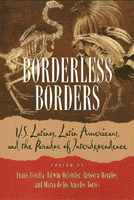

Over the past several decades, Latinos in the United States have emerged as strategic actors in major processes of social transformation
Over the past several decades, Latinos in the United States have emerged as strategic actors in major processes of social transformation


 Over the past several decades, Latinos in the United States have emerged as strategic actors in major processes of social transformation
Over the past several decades, Latinos in the United States have emerged as strategic actors in major processes of social transformation

|  |
Borderless BordersU.S. Latinos, Latin Americans, and the Paradox of Interdependenceedited by Frank Bonilla, Edwin Meléndez, Rebecca Morales and María de los Angeles Torrespaper EAN: 978-1-56639-620-2 (ISBN: 1-56639-620-4) |
This new reality—the Latinization of the United States—is driven by forces that reach well beyond U.S. borders. It asserts itself demographically, politically, in the workplace, and in daily life. The perception that Latinos are now positioned to help bring about change in the Americas from within the United States has taken hold, sparking renewed interest and specific initiatives by hemispheric governments to cultivate new forms of relationships with emigrant communities.
Borderless Borders describes the structural processes and active interventions taking place inside and outside U.S. Latino communities. After a context-setting introduction by urban planner Rebecca Morales, the contributors focus on four themes. Economist Manuel Pastor Jr., urban sociologist Saskia Sassen, and political scientist Carol Wise look at emerging forms of global and transnational interdependence and at whether they are likely to produce individuals who are economically independent or simply more dependent. Sociologist Jorge Chapa, social anthropologist Maria P. Fernández Kelly, and economist Edwin Meléndez examine the negative impact of economic and political restructuring within the United States, especially within Latino communities. Performance artist Guillermo Gomez-Peña, legal scholar Gerald Torres, political scientist María de los Angeles Torres, and modern language specialist Silvio Torres-Saillant consider the implications—for community formation, citizenship, political participation, and human rights—of the fact that individuals are forced to construct identities for themselves in more than one sociopolitical setting. Finally, sociologist Jeremy Brecher, sociologist Frank Bonilla, and political scientist Pedro Cabán speculate on new paths into international relations and issue-oriented social movements and organizations among these mobile populations. To supplement the written contributions, painter Bibiana Suárez has chosen several artworks that contribute to the interdisciplinary scope of the book.
Excerpt available at www.temple.edu/tempress
Acknowledgments
Preface: Changing the Americas from Within the United States – Frank Bonilla
1. Dependence or Interdependence: Issues and Policy Choices Facing Latin Americans and Latinos – Rebecca Morales
Part I: Global Interdependence
2. Interdependence, Inequality, and Identity: Linking Latinos and Latin Americans – Manuel Pastor, Jr.
3. Trading Places: U.S. Latinos and Trade Liberalization in the Americas – Manuel Pastor, Jr. and Carol Wise
4. The Transnationalization of Immigration Policy – Saskia Sassen
Part II: The Reconfigured United States
5. The Burden of Interdependence: Demographic, Economic, and Social Prospects for Latinos in the Reconfigured U.S. Economy – Jorge Chapa
6. From Estrangement to Affinity: Dilemmas of Identity Among Hispanic Children – Patricia Fernández-Kelly
7. The Economic Development of El Barrio – Edwin Meléndez
Part III: The Politics and Identity of Diaspora
8. 1995—Terreno Peligroso/Danger Zone: Cultural Relations Between Chicanos and Mexicans at the End of the Century – Guillermo Gómez-Peña
9. Visions of Dominicanness in the United States – Silvio Torres-Saillant
10. The Legacy of Conquest and Discovery: Meditations on Ethnicity, Race, and American Politics – Gerald Torres
11. Transnational Political and Cultural Identities: Crossing Theoretical Borders – María de los Angeles Torres
Part IV: Reaching for the Civil Society on a Global Scale
12. Popular Movements and Economic Globalization – Jeremy Brecher
13. The New Synthesis of Latin-American and Latino Studies – Pedro Cabán
14. Rethinking Latino/Latin-American Interdependence: New Knowing, New Practice – Frank Bonilla
Notes
About the Illustrations – Bibiana Suárez
About the Contributors
Index
Frank Bonilla is Professor Emeritus and former Director of the Center for Puerto Rican Studies at Hunter College as well as former Managing Director of the Inter University Program in Latino Research.
Edwin Meléndez is Professor and Director of the Mauricio Gastón Institute for Latino Community Development and Public Policy at the University of Massachusetts, Boston.
Rebecca Morales is Research Associate at San Diego's Center for U.S. Mexican Studies and former Director of the Center for Urban Economic Development at the University of Illinois, Chicago.
María de los Angeles Torres is Associate Professor of Political Science at DePaul University.
Contributors: Jeremy Brecher, Pedro Cabán, Jorge Chapa, Maria P. Fernández Kelly, Guillermo Gomez-Peña, Manuel Pastor Jr., Saskia Sassen, Gerald Torres, Silvio Torres-Saillant, Carol Wise, and the editors.
Latino/a Studies
Latin American/Caribbean Studies
© 2015 Temple University. All Rights Reserved. This page: http://www.temple.edu/tempress/titles/1403_reg.html.